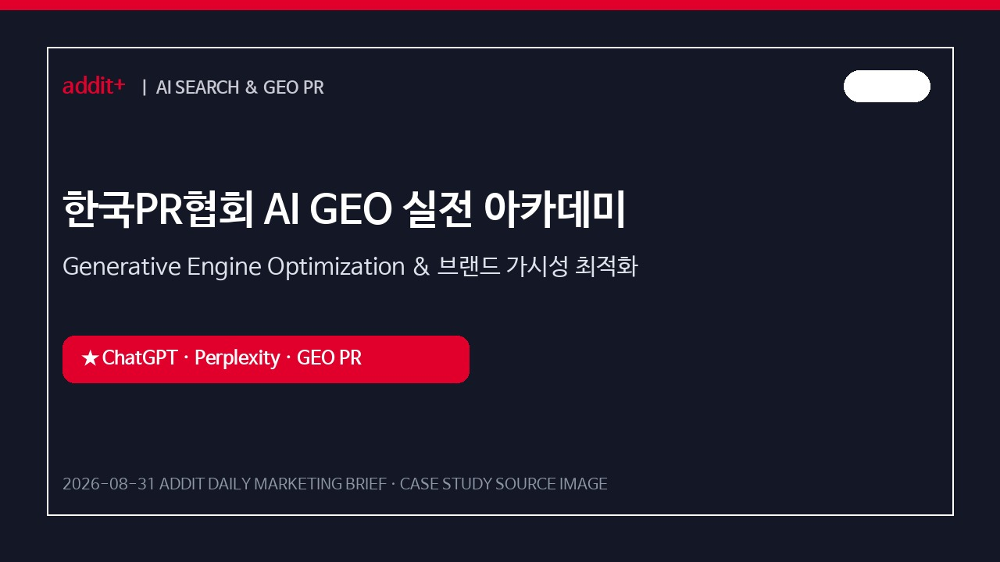
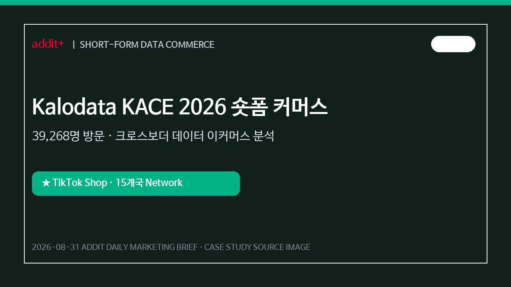
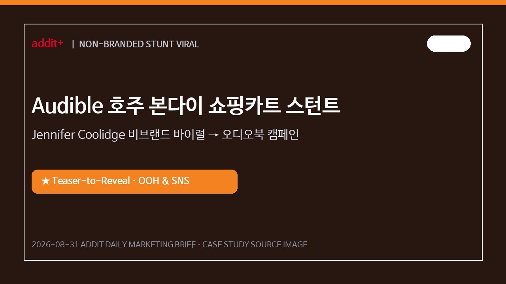
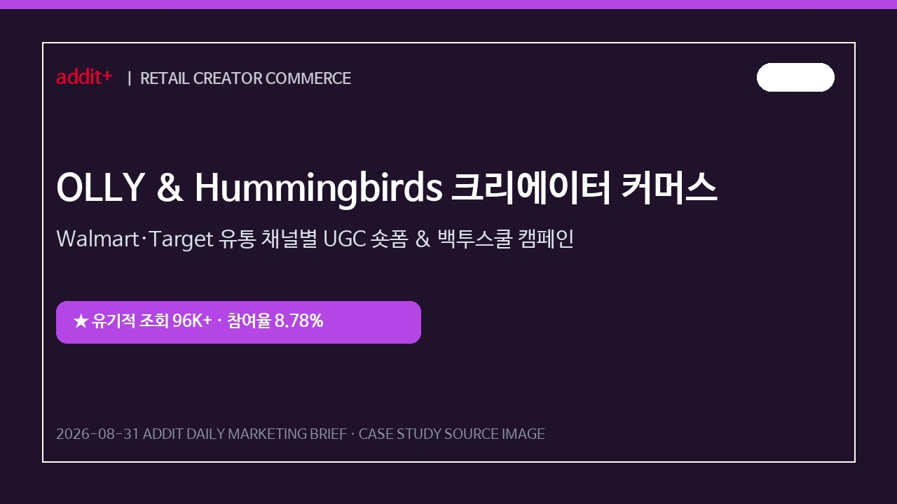
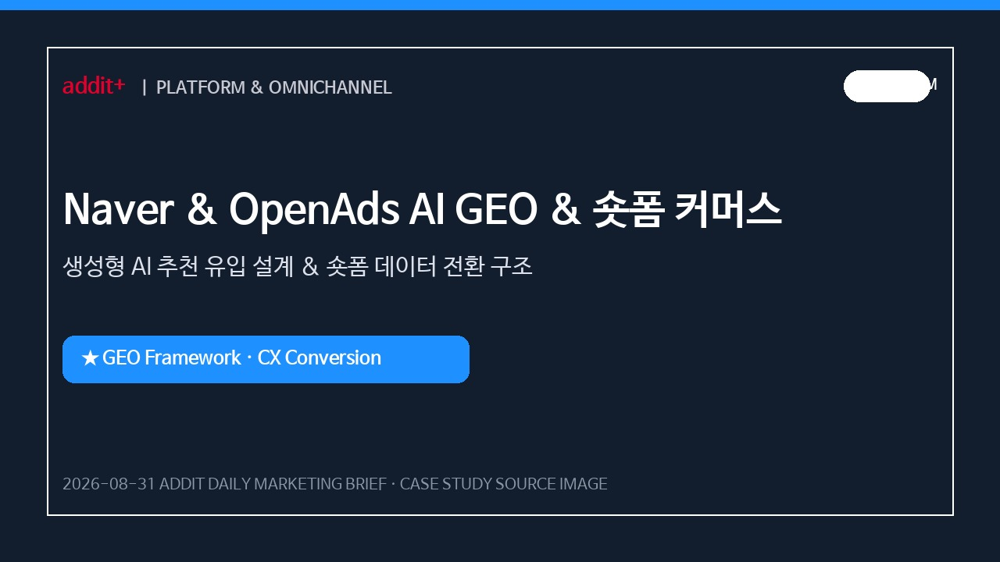
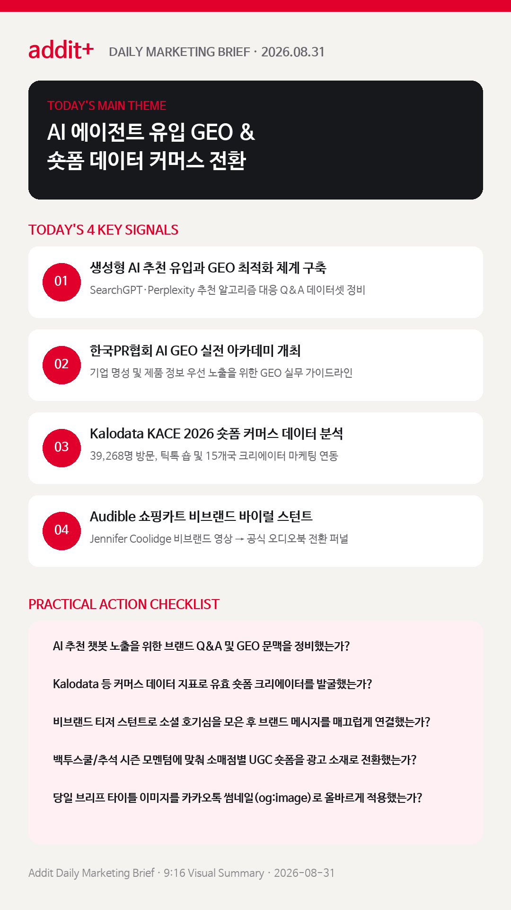

01
생성형 AI 에이전트 추천 유입과 검색 유입의 패러다임이 전환된다
AI 에이전트의 맞춤 추천으로 인입된 고객은 명확한 구매 목적을 지녀 브랜드의 GEO(Generative Engine Optimization) 설계가 핵심 변수로 부상합니다. (KOREA PR & OPENADS)
생성형 AI 추천 유입 GEO 구조화, Kalodata KACE 숏폼 커머스 데이터 분석, Audible 비브랜드 스턴트 및 OLLY 백투스쿨 크리에이터 커머스 성과 전략을 한눈에 확인합니다.
AI 에이전트의 맞춤 추천으로 인입된 고객은 명확한 구매 목적을 지녀 브랜드의 GEO(Generative Engine Optimization) 설계가 핵심 변수로 부상합니다. (KOREA PR & OPENADS)
ChatGPT·Perplexity 등 AI 엔진이 브랜드를 우선 인용·추천하도록 Q&A 데이터셋과 웹 자산 아키텍처를 최적화합니다. (KOREA PR)
39,268명 방문을 기록한 KACE 2026 기반 틱톡 숍 및 15개국 크리에이터 네트워크 데이터 분석으로 해외 판매 전환율을 극대화합니다. (OPENADS)
배우 Jennifer Coolidge의 비브랜드 스턴트 영상으로 전국적 호기심을 모은 후 공식 오디오북 캠페인으로 매끄럽게 전환시킵니다. (SCRIBBLE NETWORK)
Walmart, Target 등 소매점별 크리에이터 UGC 숏폼을 제작해 유기적 동영상 조회 9만6천 회 및 도달 대비 참여율 8.78%를 달성합니다. (HUMMINGBIRDS)

KOREAChatGPT·Perplexity 등 AI 에이전트가 브랜드를 정확히 인용·추천하도록 Q&A 데이터셋과 GEO 구조화 PR 문맥을 수립했습니다.

KOREA틱톡 숍 데이터 분석과 15개국 크리에이터 네트워크를 연동해 성과형 숏폼 커머스 및 해외 판매 전환을 극대화했습니다.

GLOBAL비브랜드 숏폼 영상으로 소셜 호기심을 극대화한 후 8월 20일 공식 Audible 오디오북 캠페인으로 전환했습니다.

GLOBAL소매점별 특화 크리에이터 UGC 숏폼을 제작하고 유료 광고 소재로 재활용해 유기적 조회 9만6천 회를 기록했습니다.

PLATFORM검색어 기반 단발 유입을 넘어 AI 에이전트의 추천 알고리즘과 숏폼 커머스 데이터 지표를 결합한 옴니채널 전환 구축.
기존 SEO 중심 키워드 타깃팅을 넘어, AI 추천 알고리즘이 브랜드 맥락을 인식하고 제품을 인용하도록 PR 및 브랜드 사이트 구조를 GEO 기준에 맞춰 정비합니다.
한국PR협회 GEO 아카데미 근거 보기 →단순 인플루언서 협업이 아닌 Kalodata 등 이커머스 데이터 지표 기반으로 유효 크리에이터를 발굴하고 숏폼 콘텐츠를 유료 퍼포먼스 소재로 재활용합니다.
Kalodata OpenAds 사례 근거 보기 →피로감이 높은 상업적 노출 대신 1차 비브랜드 숏폼 영상으로 호기심을 형성한 후 브랜드 혜택을 매끄럽게 연결하는 3단계 캠페인을 기획합니다.
Scribble Audible 스턴트 근거 보기 →디지털 미디어 플랫폼별 미디어 믹스 및 숏폼 훅(Hook) 데이터 분석을 결합하여 시즌 모멘텀(백투스쿨, 추석 시즌 등)에 맞춘 즉각적 구매 전환 퍼널을 설계합니다.
Hummingbirds OLLY 사례 근거 보기 →2026 기업 PR 담당자를 위한 AI GEO 실전 아카데미 및 브랜드 가시성 최적화 가이드를 확인합니다.
한국PR협회 바로가기 →KACE 2026 숏폼 데이터 분석 및 글로벌 크리에이터 이커머스 성공 모델을 분석합니다.
오픈애즈 바로가기 →
마케팅 성과는 단순 수동 검색 대응에서 AI 에이전트 유입 맞춤 GEO 구조화, 숏폼 커머스 데이터 분석, 비브랜드 티저 스턴트 퍼널의 유기적 연계로 완성됩니다.
{kind=link}